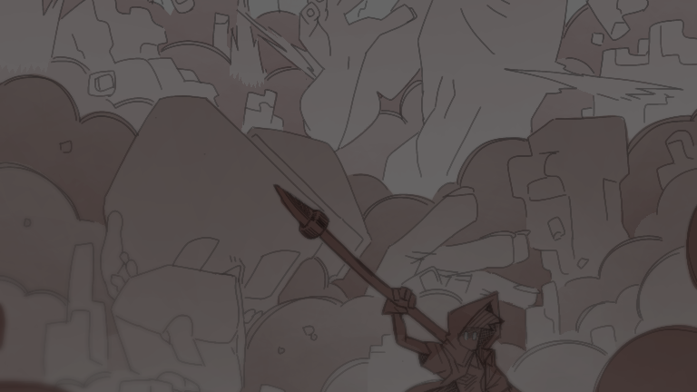
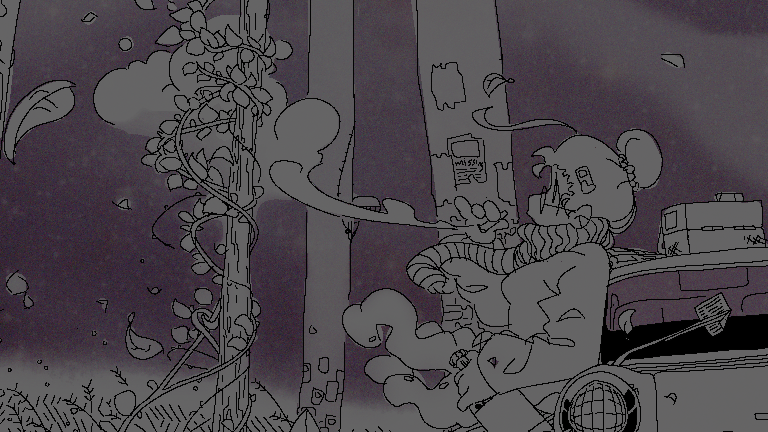

✎ABOUT ME
Cheannon Lou Adrianne C. Ferrancullo is a student with some experience with both 2D and 3D arts.
Currently 19 years old, he has made many projects throughout the years, such as illustrations and animations, as well as 3d modeling, and is willing to improve his skills even further.
At the moment, he is studying Multimedia Arts in FEU Tech as a sophomore.
He is interested in many things, mostly related to the arts.
He likes horror and sci-fi media, especially those that involve monsters and the sort.
He also likes games, specifically sandbox games or games that let you explore on your own free will.
He also likes multiplayer games, especially those where you have to cooperate with one another.

✱SHOP
View my stuff!

⛐CONTACTS
See where you can find me!